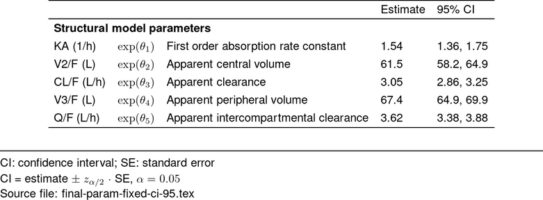

This vignette takes the user through some basic scenarios for
defining, formatting, and making parameter tables using
pmparams. For more information how to effectively integrate
pmparams into your workflow, visit the
MeRGE Expo: Parameter Tables .
We begin by creating a parameter key that tells R how to interpret you parameter values. Our code require four arguments for each parameter:
If you have a model that uses theta in the $ERROR block, make sure
that the theta section’s panel is “RV” so that pmparams
functions can properly identify it.
It is recommended to use a parameter key yaml, but
pmparams works for parameter key tibbles.
A more detailed walk-through of generating the parameter key is available here: MeRGE Expo: Creating a Parameter Key .
model_dir <- system.file("model/nonmem", package = "pmparams")
paramKey <- file.path(model_dir, "pk-parameter-key-new.yaml")
yaml::yaml.load_file(paramKey) %>% unlist() %>% head()
#> THETA1.abb THETA1.desc
#> "KA (1/h)" "First order absorption rate constant"
#> THETA1.panel THETA1.trans
#> "struct" "logTrans"
#> THETA2.abb THETA2.desc
#> "V2/F (L)" "Apparent central volume"pmparams allows for different parameter estimate input
types:
bbr NONMEM modelbbr NONMEM model (output from
bbr::read_model())bbr NONMEM model summary (output from
bbr::model_summary())bbr::param_estimates())For this example, we will use a bbr model
mod <- bbr::read_model(file.path(model_dir, "102"))We will now join parameter estimates and parameter key. Note: this is
an inner_join, so only parameters included in the model
output and parameter key will be kept in the table. This was done so
that, if your base and final model used the same structural THETAs and
random parameters, the same parameter key could be used for both. The
additional covariate THETAs defined in the parameter key YAML would
simply be ignored when creating the base model parameter table.
Additionally, define_param_table performs checks and
calculates confidence intervals.
param_df <- mod %>%
define_param_table(.key = paramKey)
head(param_df)
#> # A tibble: 6 × 33
#> parameter_names estimate stderr random_effect_sd random_effect_sdse fixed
#> <chr> <dbl> <dbl> <dbl> <dbl> <lgl>
#> 1 THETA1 0.434 0.0629 NA NA FALSE
#> 2 THETA2 4.12 0.0276 NA NA FALSE
#> 3 THETA3 1.12 0.0328 NA NA FALSE
#> 4 THETA4 4.21 0.0192 NA NA FALSE
#> 5 THETA5 1.29 0.0354 NA NA FALSE
#> 6 OMEGA(1,1) 0.221 0.0530 0.470 0.0564 FALSE
#> # ℹ 27 more variables: diag <lgl>, shrinkage <dbl>, name <chr>, abb <chr>,
#> # desc <chr>, panel <chr>, trans <chr>, nrow <int>, transTHETA <lgl>,
#> # THETAERR <lgl>, TH <lgl>, OM <lgl>, S <lgl>, LOG <lgl>, LOGIT <lgl>,
#> # lognormO <lgl>, Osd <lgl>, logitOsd <lgl>, propErr <lgl>, addErr <lgl>,
#> # addErrLogDV <lgl>, value <dbl>, se <dbl>, corr_SD <dbl>, lower <dbl>,
#> # upper <dbl>, ci_level <dbl>Now, we perform some house-keeping based on the new parameter key
information, calculate any summary statistics (the 95% confidence
intervals are calculated by default), and format the values for the
report using format_param_table().
param_df <- param_df %>%
format_param_table(.cleanup_cols = TRUE, .digit = 3)
head(param_df)
#> # A tibble: 6 × 7
#> type abb greek desc value shrinkage ci_95
#> <chr> <chr> <glu> <chr> <glu> <chr> <chr>
#> 1 Structural model parameters KA (1/h) $\ex… Firs… 1.54 - 1.36…
#> 2 Structural model parameters V2/F (L) $\ex… Appa… 61.5 - 58.2…
#> 3 Structural model parameters CL/F (L… $\ex… Appa… 3.05 - 2.86…
#> 4 Structural model parameters V3/F (L) $\ex… Appa… 67.4 - 64.9…
#> 5 Structural model parameters Q/F (L/… $\ex… Appa… 3.62 - 3.38…
#> 6 Interindividual variance parameters IIV-KA $\Om… Vari… 0.22… 18.2 0.11…Usually define_param_table and
format_param_table are run together in a single call like
this:
param_df <- define_param_table(
.estimates = paramEstimatePath,
.key = paramKeyPath
) %>% format_param_table()We can leverage make_pmtable() to generate fixed effects
and random effects parameter tables, and param_notes() to
easily add informative footnotes or notes.
# grab footnotes
footnote <- param_notes(.ci = 95)
## FIXED EFFECTS table ----------------------------
tab_fixed <- make_pmtable(param_df, .pmtype = "fixed") %>%
# abbreviations
st_notes(footnote$ci, footnote$se) %>%
st_notes_str() %>%
# equations
st_notes(footnote$ciEq) %>%
# file
st_files(output = "deliv/final-param-fixed-ci-95.tex")
tab_fixed_out <- tab_fixed %>% stable() %>%
stable_save_image(format = "png")
st_image_show(tab_fixed_out, width = 0.6)
## RANDOM EFFECTS table ----------------------------
tab_random <- make_pmtable(param_df, .pmtype = "random") %>%
# abbreviations
st_notes(footnote$ci, footnote$se) %>%
st_notes_str() %>%
# equations
st_notes(footnote$cvOmegaEq, footnote$cvSigmaEq) %>%
# file
st_files(output = "deliv/final-param-random-ci-95.tex")
tab_random_out <- tab_random %>% stable() %>%
stable_save_image(format = "png")
st_image_show(tab_random_out, width = 0.6)If you want to add or overwrite pre-defined pmtables
argument, simply pipe onto the make_pmtable tibble:
tab_random2 <- tab_random %>%
st_panel("abb") %>%
st_select(-"type", -"greek") %>%
st_files(output = "deliv/final-param-random-ci-95-modified.tex")
tab_random_out2 <- tab_random2 %>% stable() %>%
stable_save_image(format = "png")
st_image_show(tab_random_out2, width = 0.6)pmparams exports two functions for appending bootstrap
estimates to parameter tables. See the
Reference Log for more details.